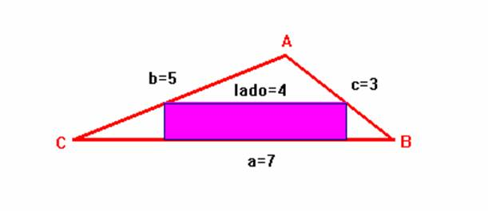
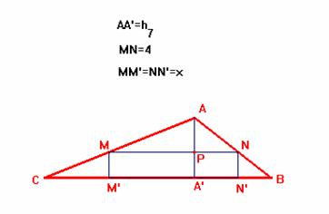

Problema 73
Dado un triángulo de lados 7 cm, 5 cm, y 3 cm, inscribir un rectángulo de base 4 cm.

Vamos a probar que sólo existe una única solución válida.
De cara a obtener unas relaciones numéricas entre las distintas posibilidades veamos que el área del triángulo dado es igual a , donde s=1/2×(a+b+c)=15/2
En principio, si el rectángulo está inscrito en dicho triángulo, uno de sus lados debe ser paralelo a uno de los lados del triángulo de modo que el lado paralelo del rectángulo descanse sobre aquel lado.
veamos los casos que se pueden presentar:
Caso 1.1.- Lado 4 del rectángulo es paralelo al lado a=7 del triángulo. (Sol de la figura)
En este caso deben darse las siguientes relaciones

1/2×7×h7= ; de donde resulta que h7= .Si ahora "unimos" en MºN los dos triángulos MM'C y NN'B obtenemos un triángulo semejante al inicial ABC, de modo que se verificará
x/h7=3/7; x= .
Para ver que esta solución es válida será suficiente comprobar que M'C+N'B=
3. Ahora bien:
M'C2= MC2 -
x2 ; Como AM = 4/7×b; MC=3/7×b=15/7, entonces:
M'C2= MC2 - x2 = (15/7)2 -( )2 ; MC=195/98
Por otro lado, N'B2= NB2 - x2 ; Como AN = 4/7×c; NB=3/7×c=9/7, entonces:
M'C2= MC2 - x2 = (9/7)2 -( )2 ; NB=99/98.
En definitiva M'C+N'B= 195/98 + 99/98 = 3
Forma de inscribir el rectángulo:
Teniendo en cuenta la semejanza existente entre los triángulos AMN y ABC
de razón 4/7 sería fácil construir los puntos M y N, una vez construido el
triángulo dado ABC.
Caso 1.2.- Lado x del rectángulo es paralelo al lado a=7 del triángulo.
Esta suposición nos llevaría a "construir" un triángulo rectángulo con uno de sus catetos iguales a 4 y como hipotenusa un valor menor que 3. IMPOSIBLE!!
Caso 2.1.- Lado 4 del rectángulo es paralelo al lado b=5 del triángulo.
Este caso es imposible ya que, al ser el ángulo A mayor que 90º, entonces si trazamos la perpendicular al lado AC desde cualquier punto del lado AB caería en su prolongación y no sobre el lado AC.
a2= b2 +c2 - 2×b×c×cos A;
cosA= ; A=120º
Caso 2.2.- Lado x del rectángulo es paralelo al lado b=5 del triángulo.
Esta suposición nos llevaría otra vez al mismo error que el caso ya comentado 1.2.
Caso 3.2.- Lado 4 del rectángulo es paralelo al lado c=3 del triángulo.
Imposible construir en el interior del triángulo dado un segmento paralelo a c y de longitud igual a 4.
Caso 3.3.- Lado x del rectángulo es paralelo al lado c=3 del triángulo.
Este caso es imposible ya que, al ser el ángulo A mayor que 90º, entonces si trazamos la perpendicular al lado AB desde cualquier punto del lado AC caería en su prolongación y no sobre el lado AB.